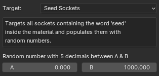
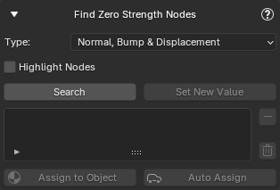
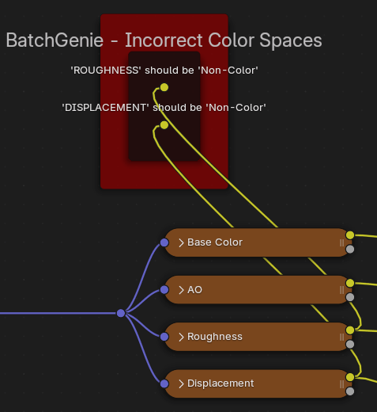
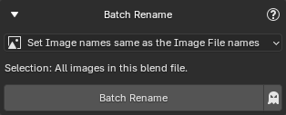

Utilities
BatchGenie offers a range of utilities to efficiently manage materials and other Assets. All utilities generate detailed reports in the console, providing insights into the actions performed by each utility. You can view these reports by navigating to Window > Toggle System Console (Windows) or through the system console if you're using Linux (requires starting Blender from the console).
Where to find?
- Most utilities are located in the main BatchGenie panel in the
3D Viewport > BatchGenie N-Panel > Utilities, focusing on batch operations, as shown in the image to the right. - The
Asset Browser > BatchGenie Menucontains Asset Tagging & Metadata utilities, which are also accessible via the right-click menu in the Asset Browser. - The
Shader Editor > BatchGenie N-Panelincludes additional utilities for single operations on materials.
Batch Utilities¶
Set Origin¶
Location: 3D Viewport ▸ BatchGenie N-Panel ▸ Utilities
Adjust the origin of Mesh objects to the minimum, maximum, or center along the X, Y, or Z axis based on their bounding box.
Settings
- Selection: Allows you to specify which objects to target:
- Selected Objects
- All Objects
- Objects marked as Assets
- Objects NOT marked as Assets
Change Node Attributes¶
Location: 3D Viewport ▸ BatchGenie N-Panel ▸ Utilities
This utility enables you to batch modify attributes across multiple materials. It’s useful for making consistent adjustments to properties like roughness, metallic, or any other material attribute.
Settings
- Selection: Allows you to specify which materials to include in the batch run:
- All Materials
- Materials marked as Assets
- Materials NOT marked as Assets
- Materials on Selected Objects
- Filter: Helps you to refine the selection made with the 'Selection'.
- Keywords: Enter keywords to filter materials by their names. Separate multiple keywords with spaces. Case-insensitive. When you type in this field, the
ExcludeandInclude onlybuttons will appear. UseExcludeto skip materials containing any of the specified keywords in their names, orInclude onlyto process only those materials whose names contain any of the specified keywords. - Only materials imported by BatchGenie: When enabled, this option ensures that the batch operation only affect materials imported by BatchGenie. Disabling it applies changes to all materials in your file, regardless of their origin.
- Keywords: Enter keywords to filter materials by their names. Separate multiple keywords with spaces. Case-insensitive. When you type in this field, the
- Target: Specify which node inside the material to target. Refer to the options listed below for details:
Targets the main shader connected to the 'Material Output' inside the material. This can be any type of shader or a custom Node-Group.
Settings
- Socket: The name or number of the socket you want to update. Socket numbers start from the top at 0 (e.g., 0 for Base Color, 1 for Roughness, 2 for IOR, etc.). This field is case-sensitive.
-
- Color: Set a specific color.
- Value: Set a specific value.
- Random Integer: Set a randomly generated number as the value.
- Random Float: Set a randomly generated number with 5 decimals as the value. Example: 3.14159
- Boolean: True / False.
Type:
For both Random Integer and Random Float, you can specify the range for the randomly generated values.
-
Additive: When enabled, this option allows you to adjust the current value of by adding or subtracting your chosen value instead of replacing it. For example, if the 'Emission Strength' of a node is set to 1.0 and you enter a value of 5 with 'Additive' enabled, the new value will be 6. If you enter a value of -2, the new value will be -1.
Targets all texture nodes inside the material and you can adjust the following attributes:
- Interpolation
- Projection
- Extension
For further technical details about texture Interpolation, Projection & Extension see the this section in the Blender manual.
Targets the Displacement Node inside the material and you can adjust the following attributes:
- Scale: Specify the new scale to be applied.
- Space: Space of the input height, can be set either to 'Object' or 'World'.
The scale option has the Additive function:
- Additive: When enabled, this option allows you to adjust the current value of by adding or subtracting your chosen value instead of replacing it. For example, if the 'Emission Strength' of a node is set to 1.0 and you enter a value of 5 with 'Additive' enabled, the new value will be 6. If you enter a value of -2, the new value will be -1.
Targets all Normal Map Nodes inside the material and allows you to set a new Strength value to be applied.
- Additive: When enabled, this option allows you to adjust the current value of by adding or subtracting your chosen value instead of replacing it. For example, if the 'Emission Strength' of a node is set to 1.0 and you enter a value of 5 with 'Additive' enabled, the new value will be 6. If you enter a value of -2, the new value will be -1.
Targets all Bump Nodes inside the material and you can adjust the following attributes:
- Strength: Specify the new strength to be applied.
- Invert: Invert the bump mapping direction to push into the surface instead of out.
- Additive: When enabled, this option allows you to adjust the current value of by adding or subtracting your chosen value instead of replacing it. For example, if the 'Emission Strength' of a node is set to 1.0 and you enter a value of 5 with 'Additive' enabled, the new value will be 6. If you enter a value of -2, the new value will be -1.
 Targets all sockets containing the word 'seed' inside the material and populates them with random numbers. You can specify the range for the randomly generated values by adjusting the A & B.
Dry Run (Symbol)
Simulate the batch process without making any changes. Useful for previewing the actions that will be taken. Results are displayed in the console for review.
Tip
If you need further details about the batch run check out the report via Window > Toggle System Console
Change Material Settings¶
Location: 3D Viewport ▸ BatchGenie N-Panel ▸ Utilities
This utility enables you to batch modify material settings across materials.
Settings
- Selection: Allows you to specify which materials to include in the batch run:
- All Materials
- Materials marked as Assets
- Materials NOT marked as Assets
- Materials on Selected Objects
- Filter: Helps you to refine the selection made with the 'Selection'.
- Keywords: Enter keywords to filter materials by their names. Separate multiple keywords with spaces. Case-insensitive. When you type in this field, the
ExcludeandInclude onlybuttons will appear. UseExcludeto skip materials containing any of the specified keywords in their names, orInclude onlyto process only those materials whose names contain any of the specified keywords. - Only materials imported by BatchGenie: When enabled, this option ensures that the batch operation only affect materials imported by BatchGenie. Disabling it applies changes to all materials in your file, regardless of their origin.
- Keywords: Enter keywords to filter materials by their names. Separate multiple keywords with spaces. Case-insensitive. When you type in this field, the
- Setting:
- Displacement Type
- Eevee Backface Culling
- Eevee Transparent Shadows
- Eevee Render Method
- Eevee Raytrace Transmission
- Eevee Thickness
- Viewport Display Color: Set the 'Viewport Display Color' of the material to match the 'Base Color' attribute of the main shader.
Replace Shader Nodes¶
Location: 3D Viewport ▸ BatchGenie N-Panel ▸ Utilities
This utility lets you replace existing 'Shader Editor' nodes with custom Node-Groups. It targets the main shader connected to the 'Material Output' within the material.
This utility is also available in the "Shader Editor" for processing individual nodes rather than in batch. See this section for details.
Settings
- Selection: Allows you to specify which materials to include in the batch run:
- All Materials
- Materials marked as Assets
- Materials NOT marked as Assets
- Materials on Selected Objects
- Filter: Helps you to refine the selection made with the 'Selection'.
- Keywords: Enter keywords to filter materials by their names. Separate multiple keywords with spaces. Case-insensitive. When you type in this field, the
ExcludeandInclude onlybuttons will appear. UseExcludeto skip materials containing any of the specified keywords in their names, orInclude onlyto process only those materials whose names contain any of the specified keywords. - Only materials imported by BatchGenie: When enabled, this option ensures that the batch operation only affect materials imported by BatchGenie. Disabling it applies changes to all materials in your file, regardless of their origin.
- Keywords: Enter keywords to filter materials by their names. Separate multiple keywords with spaces. Case-insensitive. When you type in this field, the
- Replacement Node-Group: Select the custom Node-Group to replace the shader from a dropdown menu displaying all Node-Groups in the current blend file.
- Keep Original Shader Node: Check this option if you want to retain the original node for manual inspection of the connections afterward. The original node will be moved to the side of the replaced node.
- Custom Attributes: Set one or multiple socket attributes such as color or values on the new node. See this section in the documentation for detailed instructions.
Dry Run (Symbol)
Simulate the batch process without making any changes. Useful for previewing the actions that will be taken. Results are displayed in the console for review.
Find Unconnected Nodes¶
Location: 3D Viewport ▸ BatchGenie N-Panel ▸ Utilities
This utility helps you locate materials with unconnected nodes in your file, such as Image Texture nodes.
Settings
- Type:
- All Unconnected Nodes
- Image Texture Nodes
- BatchGenie Imported Textures: Materials imported by BatchGenie that contain textures which could not be connected. See more details here about these nodes.
- Highlight Nodes: Changes the color of the found nodes to red, making them easier to spot visually.
Instructions
{kind=link}
After clicking Search, the interface will display a list of all found materials with unconnected nodes. There are three main approaches to handle the issues: Automatic, Manual, and Hybrid.
Automatic Approach-
Use the
Delete Nodesbutton to automatically remove all unconnected nodes from materials in the list. You can remove materials from the list if you wish to exclude them from the batch change before clicking the button. No further actions are required. Manual Approach-
- Use either the
Assign to Objectbutton or theAuto Assigntoggle to assign materials to the selected object:Assign to Object: Click to manually assign the selected material.Auto Assign: Automatically assigns materials as you select them from the list.
- Access the material in the 'Shader Editor' to inspect and address issues by reconnecting or removing nodes as needed.
- Use the
Remove from Listbutton ( icon) to remove materials after resolving issues. - Once all materials are addressed and removed, perform a new search to confirm all issues are fixed.
- Use either the
Hybrid Approach-
Mix manual inspection with the automatic process:
- Use
Assign to ObjectorAuto Assignto inspect materials. - Verify that unconnected nodes can be safely removed. If not, remove the material from the list to prevent unintended deletions.
- Use the
Delete Nodesbutton to remove nodes from any materials still in the list.
The Hybrid approach allows you to ensure that the automatic deletion does not remove important nodes.
- Use
Tips
- The
Clear Listbutton ( icon) clears all materials from the list, allowing you to start fresh. - Use the
Highlight Nodescheckbox to easily spot the found nodes. - Regularly refresh the search to ensure all issues have been captured and addressed.
-
If you need further details about the findings check out the report via
Window > Toggle System ConsoleExample Console Report
Search:
Delete:
Find Zero Strength Nodes¶
Location: 3D Viewport ▸ BatchGenie N-Panel ▸ Utilities
This feature searches for nodes with critical values set to zero, which may negatively affect the appearance of your materials. You can select specific node types to check: For Normal Map and Bump nodes, it checks if 'Strength' is zero; for Displacement nodes, it verifies if 'Scale' is zero. This helps ensure that your materials function as intended.
This utility is also available in the "Shader Editor" for processing individual materials rather than in batch. See this section for details.

Settings
- Type:
- Normal, Bump & Displacement
- Normal Map
- Displacement
- Highlight Nodes: Changes the color of the found nodes to red, making them easier to spot visually.
Instructions
Example

After clicking Search, the interface will display a list of all found materials with Zero Strength nodes. There are two main approaches to handle the issues: Automatic and Manual.
Automatic Approach-
Use the
Set New Valuebutton to batch adjust the values of the nodes in the materials listed. A popup will appear where you can enter the new value. You can also remove materials from the list if you wish to exclude them from the batch change before clicking the button. No further actions are required. Manual Approach-
- Use either the
Assign to Objectbutton or theAuto Assigntoggle to assign materials to the selected object:Assign to Object: Click to manually assign the selected material.Auto Assign: Automatically assigns materials as you select them from the list.
- Access the material in the 'Shader Editor' to inspect and address issues by adjusting the found nodes.
- Use the
Remove from Listbutton ( icon) to remove materials after resolving issues. - Once all materials are addressed and removed, perform a new search to confirm all issues are fixed.
- Use either the
Tips
- The
Clear Listbutton ( icon) clears all materials from the list, allowing you to start fresh. - Use the
Highlight Nodescheckbox to easily spot the found nodes. -
If you need further details about the findings check out the report via
Window > Toggle System ConsoleExample Console Report
Color Space Validator¶
Location: 3D Viewport ▸ BatchGenie N-Panel ▸ Utilities
This utility verifies that the image textures within materials in your file are using the correct color space settings, generates reports on its findings, and provides an option to automatically fix any issues.
Settings
- Console report:
- Standard: Report only includes the textures that have wrong color spaces.
- Detailed: Includes all color space details of all textures.
Example Console Report
To view the report, go to Window > Toggle System Console.
Standard:
{kind=link}
Detailed:
{kind=link}
Instructions
{kind=link}
After clicking Search, the interface will display a list of all materials with textures that have incorrect color spaces. There are two main approaches to handle the issues: Automatic and Manual.
Automatic Approach-
Use the
Auto Fixbutton to automatically set the correct Color Spaces for texture nodes in the materials listed. You can remove materials from the list if you wish to exclude them from the batch change before clicking the button. No further actions are required.
This frame is created inside the materials to help you find the relevant textures: 
{kind=link}
These frames are automatically removed when running Auto Fix and can also be removed with the Clean File utility.
Manual Approach-
- Use either the
Assign to Objectbutton or theAuto Assigntoggle to assign materials to the selected object:Assign to Object: Click to manually assign the selected material.Auto Assign: Automatically assigns materials as you select them from the list.
- Access the material in the 'Shader Editor' to inspect and address issues by adjusting the found nodes. Look for the node-frame titled 'Incorrect Color Spaces' that BatchGenie automatically creates, which contains links to all relevant textures.
- Use the
Remove from Listbutton ( icon) to remove materials after resolving issues. - Once all materials are addressed and removed, perform a new search to confirm all issues are fixed.
- Use either the
Tip
- The
Clear Listbutton ( icon) clears all materials from the list, allowing you to start fresh.
Batch Rename¶
Location: 3D Viewport ▸ BatchGenie N-Panel ▸ Utilities
While not an all-encompassing renaming tool, this function provides targeted assistance for a few specific use cases. It includes options for aligning mesh names with object names and syncing image names with their file names, making it particularly useful when dealing imported Assets that have inconsistent naming conventions.
Options
- Selection: Allows you to specify which objects to include in the batch run:
- All Objects
- Objects marked as Assets
- Objects NOT marked as Assets
- Selected Objects

Options
- Selection: Allows you to specify which objects to include in the batch run:
- All Objects
- Objects marked as Assets
- Objects NOT marked as Assets
- Selected Objects
- Naming Options:
- Add as Prefix: Adds the object name as a prefix to the material name (e.g.,
ObjectName_OriginalMaterialName). - Add as Suffix: Adds the object name as a suffix to the material name ( (e.g.,
OriginalMaterialName_ObjectName). - Complete Rename: Replace the material name with the object name.
- Add as Prefix: Adds the object name as a prefix to the material name (e.g.,
Examples
Set Mesh names same as Object names:
Set Image names same as the Image File names:
Use Case: You imported external models, and all texture names are generic like 'color map', 'roughness map', and 'normal map', making it difficult to track them. This feature solves the issue by renaming image names in Blender to match the actual file names. For example, instead of 'color map', it could be 'Bark_2K_BaseColor'.
Dry Run (Symbol)
Simulate the batch process without making any changes. Useful for previewing the actions that will be taken. Results are displayed in the console for review.
Convert Images¶
Location: 3D Viewport ▸ BatchGenie N-Panel ▸ Utilities
This utility allows you to seamlessly convert images between multiple formats, supporting both lossless and lossy compression methods. It's ideal for optimizing file sizes, preparing assets for various workflows, or standardizing image formats across projects.
You can convert images back and forth between the following formats: Png, Jpg, Webp, Tga, Tif, Bmp.
Options
- Selection
- Target: Select the file format to target.
- In: Select the source for image conversion.
- Images used by this Blend file: All images used by the current Blend file.
- Choose a directory: Images in a specified folder.
- Include Subfolders: Whether to include images in subfolders when selecting a directory
- Output
- Save as: Choose the file format to convert to, along with quality settings (if available for the selected format).
- In: Choose where to save the converted images.
- Original Location: Save converted images in the same location as the original files.
- Output Folder: Save converted images in a specified output folder.
- Maintain Folder Hierarchy: Preserve the original folder structure when saving files. Only available when using Output Folder option.
- Overwrite: Overwrite the output file if it already exists.
- Delete Original: Delete the original image file after it has been successfully converted.
- Modifications
- Downscale Image: Enable this option to downscale the image during conversion.
- Method: Choose the resampling method to use when resizing images:
- Lanczos (High Quality, Default)
- Nearest Neighbor (Pixel Art)
- Bilinear (Intermediate Quality)
- Bicubic (Smooth Gradients)
- Method: Choose the resampling method to use when resizing images:
- Downscale Image: Enable this option to downscale the image during conversion.
Dry Run (Symbol)
Simulate the batch process without making any changes. Useful for previewing the actions that will be taken. Results are displayed in the console for review.
Tips
- Cancel the Operation: You can cancel the operation at any time by pressing the ESC key. The utility will complete any ongoing tasks and display a summary of processed and skipped files.
- Choosing the Best Image Format: For a balance between image quality and file size, WebP is often the best choice. It provides significant storage savings and is generally more efficient than PNG or JPEG. WebP supports both lossy and lossless compression, along with features like transparency, making it a versatile option. For more details about supported image formats in Blender, check the official documentation.
Relink Converted Images¶
Location: 3D Viewport ▸ BatchGenie N-Panel ▸ Utilities
This utility helps you update Blender's links to images that have been converted to a different file format. When image files are converted (e.g., from Png or Tif to Jpg or Webp) to save disk space or optimize performance, Blender may lose track of the original image links due to the change in file extensions. This utility automatically relinks the converted images by searching for the corresponding files and updating their links based on customizable conditions.
Options
- Old Format: Select the file format you are converting from. The supported formats in Blender include:
Png, Jpg, Jpeg, Tga, Webp, Exr, Tif, Tiff, Bmp, Sgi, Rgb, Bw, Jp2, J2c, Cin, Dpx, Hdr. - New Format: Choose the file format you are converting to. The available formats match those listed for the "Old Format".
- File Verification:
- Verify if old file exists: Ensures that the old file exists before attempting to relink.
- Link if old file does not exist: This option will only link the new file if the old file is missing.
- Always link new file: Links the new file regardless of whether the old file is found.
- Skip relink if old file exists: Skips the relinking process if the old file still exists.
Dry Run (Symbol)
Simulate the batch process without making any changes. Useful for previewing the actions that will be taken. Results are displayed in the console for review.
Reload Images¶
Location: 3D Viewport ▸ BatchGenie N-Panel ▸ Utilities
If you have edited any of your textures externally and the changes are not visible in Blender, use this utility to reload all images in your your file.
Clean File¶
Location: 3D Viewport ▸ BatchGenie N-Panel ▸ Utilities
Helps delete any temporary files that might be left behind by BatchGenie. There are two scenarios when you might want to use this utility:
-
Blender Crashes: If Blender crashes during import or other batch processes, it can leave behind temporary data (e.g., temp materials, scenes, objects depending on the operation).
-
Removing Extra Info Nodes: If you want to remove any extra info nodes created inside your materials by BatchGenie. See the 'Info' box below for details.
Settings
-
Material Info Nodes: Checking this option will remove extra nodes that BatchGenie has created inside materials, such as frames and node reroutes that include notes and other useful information. This will not affect the appearance of the materials.
Extra Info Nodes
Examples of these nodes include:
-
'Unable to connect' nodes created during imports when there are issues connecting textures. See details here.
-
'Incorrect Color Space' nodes created by the 'Color Space Validator' utility. See details here.
-
Asset Tags¶
Location: Asset Browser ▸ BatchGenie Menu
Add or remove tags from your Assets. Select any number of Assets of any type, choose the desired tags to add, and BatchGenie will assign them to the appropriate Assets. These can be either regular tags or Smart Tags that apply the property of your choice to the Asset.
This feature works with both internal and external Assets, so you don't have to open each individual Asset Blend file separately.
- Add Tags¶

- New Tag: Creates a regular tag.
- Copy from existing tags: Lets you pick from a dropdown menu containing all tags from the currently selected Assets. Tags that are present in all of the selected Assets are filtered out (since it wouldn't make sense to apply a tag that is already there).

Tags Object Assets with their triangle count, offering customizable formatting and rounding options to suit your needs. Examples illustrate the tag's appearance based on your selections before applying them.

Tags Object Assets with their vertex count, offering customizable formatting and rounding options to suit your needs. Examples illustrate the tag's appearance based on your selections before applying them.

Adds Tags displaying the size or dimensions of objects and collections. You can customize the format and adjust options such as decimal precision and unit display. The interface provides an example to preview how the tags will appear based on your selected settings.
Tags material Assets with the texture resolution, like 2K, 4K, or 8K, by identifying the albedo texture within the material and checking its resolution.

Tags material Assets with its type: "Texture-based" or "Procedural", with an option to include node counts for both types.
Tip
Smart Tags will overwrite previously existing Smart Tags of the same type. For example, if you have added the Object Dimensions tag and then edited the object, you can reapply the tag to update it.
- Combine / Split Tags¶

Combine or split existing tags on Assets. Combine single-word tags into a single line, separated by commas (e.g., "tag1, tag2, tag3"), only if they don't contain spaces.
The split function reverses this, separating combined tags that follow the exact "tag1, tag2, tag3" format. Tags with spaces, like "Long tag with spaces" are unaffected by either function.
- Remove Tags¶
Displays all tags from the currently selected Assets in the Asset Browser in a dropdown menu, allowing you to choose which tags to remove.
You also have filtering options to only show common tags from the selected Assets, as well as an "Exclude common" option to exclude these tags.
Allows you to search for tags using a keyword with options for "exact," "contains," "starts with," or "ends with," along with a "case sensitive" option to precisely target specific tags.
Allows you to target specific Smart Tags applied by BatchGenie for safe removal without affecting other types of tags.
Tip
You can also access the Tags menu through the right-click menu in the Asset Browser.
Asset Metadata¶
Location: Asset Browser ▸ BatchGenie Menu
Batch add metadata for your Assets: Description, License, Copyright, and Author. You can select and edit one or multiple attributes simultaneously. This feature works with both internal and external assets, so you don't have to open each individual Asset Blend file separately.
If a single Asset is selected, you can use the "Retrieve from Selected Asset" button to load its existing metadata for editing.
Tip
You can also access the Metadata menu through the right-click menu in the Asset Browser.
Move Assets¶
Location: Asset Browser ▸ BatchGenie Menu
Move Assets to different Asset Catalogs to help you organize your Asset Library. This feature works with both internal and external Assets, so you don't have to open each individual Asset Blend file separately.
The 'Catalog Details' section displays the UUID and the Asset Library Path of the chosen Catalog.
Instructions
First, make sure you're in the specific Asset library where you want to move your assets. Once that's done, select the assets you want to move, choose the destination, and click OK.
How is this done?
The utility does not touch the Assets "physical location"; it simply changes the Catalog ID they are associated with, making them appear in a specific catalog (exactly as if you had moved them manually).
Load previews from disk¶
Location: Asset Browser ▸ BatchGenie Menu ▸ Misc
Load custom Asset Preview images from a specified directory. When assets are selected in the Asset Browser, this tool checks for image files in the selected folder that match the names of the assets.
Supports all image formats that are natively supported by Blender. The tool prioritizes common formats in the following order: Png, Jpg, Jpeg, Tga, Webp, Exr, Tif, Tiff, and Bmp. It stops searching once a matching image is found. If you need support for less common formats (Sgi, Rgb, Bw, Jp2, J2c, Cin, Dpx, Hdr), ensure Use Extended Formats is enabled in the BatchGenie Preferences.
Instructions
- Select the Assets you want to load previews for in the Asset Browser.
- Navigate to
BatchGenie > Misc > Load previews from disk.
Pack Textures¶
Location: Asset Browser ▸ BatchGenie Menu ▸ Misc
This utility packs all associated textures into their respective blend files, ensuring that your assets retain their appearance without the need for external texture files.
Note
This feature packs textures for all Assets inside the blend file, which can affect other Assets that you have not selected but reside in the same blend file as one of the selected Assets.
Instructions
- Select the Assets you want to pack from the Asset Browser.
- Navigate to
BatchGenie > Misc > Pack Textures.
Export Asset Details to Excel¶
Location: Asset Browser ▸ BatchGenie Menu ▸ Misc
This utility allows you to export detailed information about Assets from the Asset Browser to an Excel file.
Instructions
- In the Asset Browser, select the Assets you want to include in the export.
- Run the
Export Asset Details to Excelutility. - Choose which details you want to include in the export by selecting the corresponding checkboxes.
- Available Details: Asset Name, Type, Path, Tags, Description, Author, Copyright, License.
- Specify the file name and save location in the file browser.
- The generated Excel file will contain the details of the selected Assets, organized into columns such as name, type, and metadata.
{kind=link}
Single Operation Utilities¶
Replace Node¶
Location: Shader Editor ▸ BatchGenie N-Panel
This utility offers similar functionality to the Replace Shader Nodes utility but is designed for processing individual nodes rather than batch adjustments. It also allows you to replace any type of node, not just the main shader node as in the main utility.
Settings
- Target:
- Main Shader: Targets the main shader connected to the 'Material Output' inside the material.
- Active Node: Select a node manually.
- Keep Original Node: Check this option if you want to retain the original node for manual inspection of the connections afterward. The original node will be moved to the side of the replaced node.
- Replacement Node-Group: Select the custom Node-Group to replace the shader from a dropdown menu displaying all Node-Groups in the current blend file.
- Custom Attributes: Set one or multiple socket attributes such as color or values on the new node. See this section in the documentation for detailed instructions.
Find Zero Strength Nodes¶
Location: Shader Editor ▸ BatchGenie N-Panel
This utility offers the same functionality as the Find Zero Strength Nodes utility but is designed for processing individual materials rather than batch adjustments.
Settings
-
Type:
- Normal, Bump & Displacement
- Normal Map
- Displacement
-
Highlight Nodes: Changes the color of the found nodes to red, making them easier to spot visually.